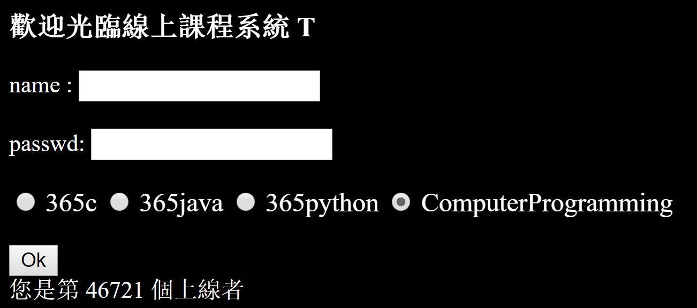
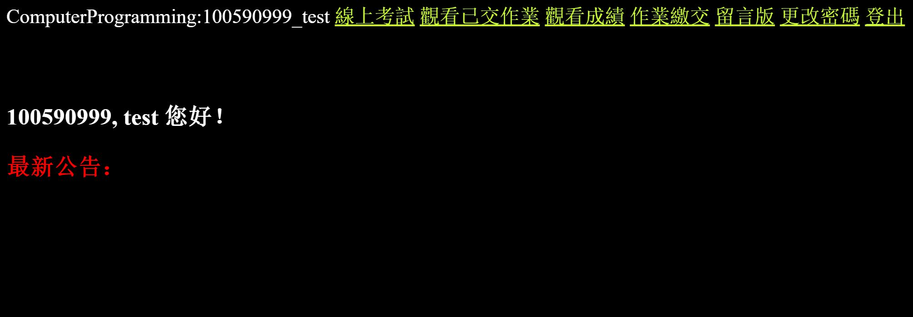

Submitting your tasks
- Log on to the homework portal here: http://140.124.184.228:8080/Exam/Login
- Sign in using your student ID. Be sure to select C.

If this is the first time you use the system, the initial password is 0.
REMEMBER TO CHANGE YOUR PASSWORD TO PREVENT OTHERS FROM MISUSING YOUR ACCOUNT! YOU ARE RESPONSIBLE FOR ALL DAMAGES CAUSED BY ANY MISUSE OF YOUR ACCOUNT.
-
Once you successfully log in, you will see this welcome page.

On the top, from left to right, you will see the following links in order: online test (線上考試), view submitted homeworks (觀看已交作業), check grades, submit homework (作業繳交), message board (留言板), change password (更改密碼), comment (評分), and log out (登出).
-
Once you click on “submit homework” (作業繳交), you will see a list of tasks that are assigned to you.
Each task has a 3-digit question code (題號); you can click on the code to view the question.
Each task has a set deadline (繳交期限), so be sure to complete your assigned tasks before the deadline (繳交期限) passes!
This homework system is computerized, so once the deadline for the task is reached, then the submission link (繳交) will be disabled and replaced with this text: “期限已過” (deadline has passed), and the system will not accept any more submissions.
You can find out if you have submitted your homework or not (備註), and you can also check whether or not your program is accepted (測試).
-
If the submission link is open, you can click on the submission link to submit your assignment. You will find a screen as shown below:
Click “Choose File” to select which file you would like to submit.
Your file name must contain only Roman numerals and Arabic numbers, and the files have to be less than 2 MB.
You can also add notes, just for your reference. Click “Upload” to upload your file.
-
Once you have submitted your file, click on Check Results (查看結果) to see whether your program is accepted or not.
This screen will come out.
The system will tell you whether or not your program is accepted after your program goes through a series of testing with predetermined test cases set up by Kuolao himself.
If your program passes the testing of one test case, “通過測試” (testing success) will show up, otherwise, “測試失敗” (testing failed) will show up instead. At the bottom, the acceptance rate of the program is shown.
From the above example, the program only passed 1 out of 3 testings, so the acceptance rate for that program is 33% (1/3 x 100% = 33%).
You need to get the acceptance rate to 100% in order to clear the task.
-
Clicking on “List of passers” (通過測試名單) will display a list of students who have successfully completed the task.
If your student ID is displayed here, then you have successfully completed the task!
-
Clicking on “View Submitted Homeworks” (觀看已交作業) will view a list of tasks that you have submitted.
If you are not satisfied with your work or if you accidentally uploaded the wrong file, you can click on the delete (刪除) link to delete your submission – only if the link is open. If the deadline for the task has passed, the delete link is replaced by “處理中” (Processing...)
If you would like to submit your homework again, you must delete your already submitted homework first.